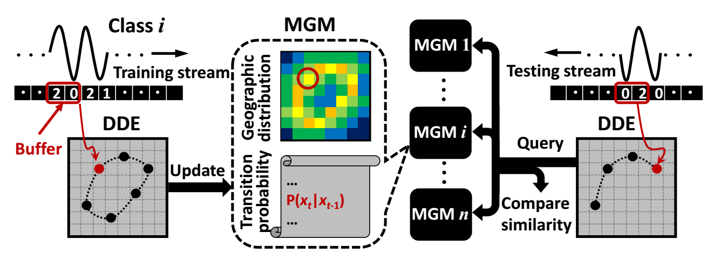

|
|
About me [CV]
I'm currently a research engineer in Adobe Research, San Jose. I obtained the Ph.D. in 2018 supervised by Prof. Hairong Qi in computer engineering at the University of Tennessee, Knoxville, US. I received the B.S. and M.S. in 2010 and 2013, respectively, from the Northeastern University and Zhejiang University, China. My interest lies in deep learning based image synthesis, computer vision, text detection and recognition, etc.
News
Our paper "Image Super-Resolution by Neural Texture Transfer" is accepted by CVPR 2019.
Joined Adobe Research as a research engineer since December 2018.
Ph.D. defense on September 20th, 2018. "Conditional Image Synthesis by Generative Adversarial Modeling"
Received the book of "Digital Image Processing 4th Edition" from Dr. Gonzalez. It is the second book from the box, and the first one is to my advisor Dr. Qi :-)
Recognized for W. O. Leffell Scholarship at the Gonzalez Family Awards Dinner on April 27, 2017
Citation for Extraordinary Professional Promise presented to Zhifei Zhang at the Honors Banquet on April 19, 2017
Experiences
| 2017.09 - 2018.03 Research intern in Adobe Research, San Jose, CA. | |
| 2017.05 - 2017.08 Research intern in GE Global Research, Niskayuna, NY. | |
| 2016.08 - 2017.05 It is my great honor to involve in editing the 4th edition of "Digital Image Processing" with Dr. Rafael C. Gonzalez. There are more than 1,000 educational, industrial, government, and research institutions in over 50 countries that regularly use the books. |
Publications
 |
Z. Zhang, Z. Wang, Z. Lin, and H. Qi Image Super-Resolution by Neural Texture Transfer accepted by IEEE Conference on Computer Vision and Pattern Recognition (CVPR), 2019. [Paper][Code][Project page] |
| Z. Wang, M. Song, Z. Zhang, Y. Song, Q. Wang and H. Qi Beyond Inferring Class Representatives: User-Level Privacy Leakage From Federated Learning IEEE International Conference on Computer Communications (INFOCOM), 2019. [Paper] |
|
| Z. Zhang, Y. Song, and H. Qi Decoupled Learning for Conditional Adversarial Networks IEEE Winter Conference on Applications of Computer Vision (WACV), 2018. [Paper][Code][Slides][Poster] |
|
| Y. Song, Z. Zhang, and H. Qi r-BTN: Cross-domain Face Composite and Synthesis from Limited Facial Patches The Thirty-Second AAAI Conference on Artificial Intelligence (AAAI), 2018. [Paper] |
|
| Z. Zhang, Y. Song, and H. Qi Stabilizing the Conditional Adversarial Network by Decoupled Learning ICML Workshop on Implicit Models, 2017. [Paper] |
|
| Y. Song, Z. Zhang, and H. Qi Recursive Cross-Domain Facial Composite and Generation from Limited Facial Parts ICML Workshop on Implicit Models, 2017. [Paper] | |
| Z. Zhang, Y. Song, and H. Qi GANs Powered by Autoencoding --- A Theoretic Reasoning ICML Workshop on Implicit Models, 2017. [Paper] | |
| Z. Zhang, Y. Song, and H. Qi Age Progression/Regression by Conditional Adversarial Autoencoder IEEE Conference on Computer Vision and Pattern Recognition (CVPR), 2017. [Paper][Code][Spotlight] | |
| Y. Song, W. Wang, Z. Zhang, H. Qi, Y. Liu Multiple Event Detection and Recognition for Large-scale Power Systems through Cluster-based Sparse Coding IEEE Transactions on Power Systems (TPS), 2017. [Paper][Code] | |
| Y. Song, Z. Zhang, L. Liu, A. Rahimpour, and H. Qi Dictionary Reduction: Automatic Compact Dictionary Learning for Classification Asian Conference on Computer Vision (ACCV), 2016. [Paper][Code] | |
|  | Z. Zhang, Y. Song, W. Wang, and H. Qi Derivative Delay Embedding: Online Modeling of Streaming Time Series Conference on Information and Knowledge Management (CIKM), 2016. [Paper][Code][Slide (Oral)] |
| Z. Zhang, Y. Song, H. Cui, J. Wu, F. Schwartz, and H. Qi Topological Analysis and Gaussian Decision Tree: Effective Representation and Classification of Biosignals of Small Sample Size IEEE Transactions on Biomedical Engineering (TBME), 2016. [Paper][Code] | |
| A. Taalimi, A. Rahimpour, C. Capdevila, Z. Zhang, and H. Qi Robust Coupling in Space of Sparse Codes for Multi-View Recognition International Conference on Image Processing (ICIP), 2016 [Paper] | |
| Z. Zhang, Y. Song, H. Cui, J. Wu, F. Schwartz, and H. Qi Early Mastitis Diagnosis through Topological Analysis of Biosignalsfrom Low-Voltage Alternate Current Electrokinetics International Conference on the IEEE Engineering in Medicine and Biology Society (EMBC), 2015. [Paper][Code] | |
| Y. Song, W. Wang, Z. Zhang, Y. Liu, and H. Qi Multiple Event Analysis for Large-scale Power Systems Through Cluster-based Sparse Coding IEEE International Conference on Smart Grid Communications, 2015. [Paper][Code] | |
| M. Unrath, Z. Zhang, A. Goins, R. Carpenter, W.-K. Wong, and R. Balasubramanian Using Crowdsourcing to Generate Surrogate Training Data for Robotic Grasp Prediction AAAI Conference on Human Computation and Crowdsourcing, 2014. [Paper] | |
| Z. Zhang, B. Han, P. Li, Z. Fang, W. Xu Small Unmanned Aerial Vehicle Visual System for Ground Moving Target Positioning International Conference on Automatic Control and Artificial Intelligence, 2012. [Paper] | |
| X. Chen, Z. Zhang, Y. Song, and R. Chen A Real-Time Driving Fatigue Monitoring DSP Device Based On Computing Complexity of Binarized Image International Workshop on Computer Science and Engineering, 2009. [Paper] |
Talks/Reports
|
2018.09 - Conditional Image Synthesis by Generative Adversarial Modeling [Slide] 2018.09 - GAN Related Works in 2018 [Slide] 2018.04 - Review of Deep Learning based Super-Resolution [Slide] 2018.03 - Neural Network Background [Slide] 2018.01 - Ref-SR: Reference-based Single Image Super-Resolution [Slide] 2017.04 - Age Progression/Regression by Conditional Adversarial Autoencoder [Slide] 2017.03 - Generative Adversarial Networks (GANs): Past, Present, and Future [Slide] 2016.11 - Action Recognition by Delay Embedding [Slide] 2016.10 - Derivation of Backpropagation in Convolutional Neural Network (CNN) [PDF][Code] 2016.10 - Derivative Delay Embedding: Online Modeling of Streaming Time Series [Slide] 2016.04 - Human Action Recognition by Recurrent Neural Network (RNN) [Slide] 2016.04 - Localization of Radioactive Sources [Slide] 2016.02 - A brief talk about image denoising: TV, NLM, and BM3D [Slide] 2015.12 - Action Recognition Using Delay Embedding [Slide] 2015.10 - Multiple Event Detection and Recognition through Sparse Decomposition [Slide] 2015.09 - Delay Embedding on Time Series [Slide] 2015.07 - Image Noise: Detection, Measurement, and Removal Techniques [PDF][Slide] 2015.05 - Tomographic Image Reconstruction by Total-Variation Minimization [Slide] 2015.04 - Tracking Drinking Behavior from Twitter Data [PDF][Slide] 2015.01 - Topological Analysis of Biosensing Signal Based on Low-Voltage Alternate Current Electrokinetics [Slide] 2014.12 - Mobile Sensor Platform (MSP) v5.0 [PDF] 2014.12 - Brief Survey of Participatory Sensing [PDF] 2014.11 - Digit Recognizer [PDF][Slide] 2014.10 - Summary of My Work during BS, MS and PhD (first yesr in OSU) [Slide] 2014.06 - Endmember Extraction from Hyperspectral Image [PDF] 2014.04 - Searching Algorithms in Playing Othello [PDF] 2013.12 - Identification of Grasp Quality Based on Learning Method [PDF] |
| Last update: 3/2/2019 |